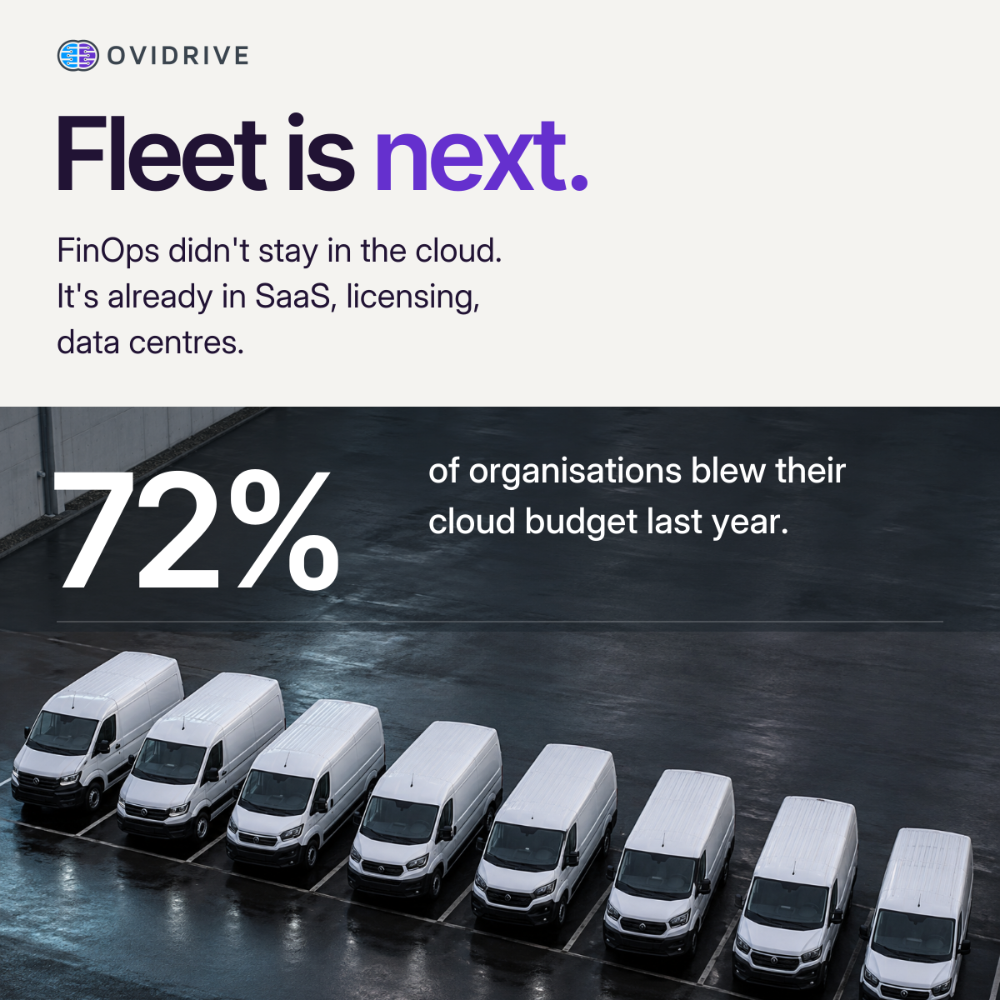

Week 1 · Tuesday
Fleet is next

Read supplied caption
FinOps stopped being a cloud story a while ago. The 2026 State of FinOps report just confirmed it. Ninety per cent of FinOps teams now manage SaaS spend, sixty four percent manage licensing, fifty-seven per cent manage private cloud, forty eight percent manage data centre. One practitioner summed up the shift better than I could: first they asked us to fix cloud, then fix the software mess, now fix the contract and licence mess. Meanwhile seventy two percent of organisations still blew through their cloud budget last year, even with all that discipline applied. Cloud got its own financial discipline because the spend was large, fragmented across teams, and nobody owned it end to end. That description fits fleet just as well as it fits cloud. Multiple suppliers. Multiple countries. Spend that shows up on a dozen invoices before anyone adds it up properly. FinOps did not stay inside cloud because cloud was special. It spread because the problem it solves exists everywhere spend is large and nobody owns it properly. Fleet is next. #FleetFinOps #FleetManagement #FleetTechnology #CostManagement